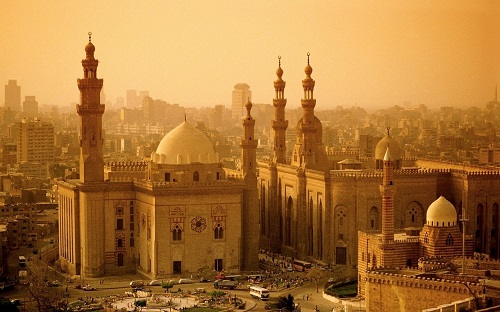

ВИДЫ ТУРОВ
Север Rocking Look
Отправиться в путешествие по окрестностям Мурманска — за незабываемыми впечатлениями и фотошедеврами
Северное сияние - это зрелище необычайной красоты. Интенсивность света зависит от солнечной активности. У северного сияния много цветов, но самым частым является зеленое свечение. Чтобы увидеть северное сияние во всей его красе, нужно выбрать период с наивысшей активностью солнца.
15000.00 руб.

Юг
Программа тура совмещает активный отдых и увлекательные экскурсии. Загадками природы овеяны места предстоящих маршрутов. Вас ждут туристические маршруты в высокогорное плато Лаго-Наки, посещение Кавказского биосферного заповедника, Экскурсия в п. Мезмай. Посещение орлиной полки и водопада Исиченко и многое другое. Вы насладитесь красотами природных ландшафтов, чистым горным воздухом. После чего вы сможете от-дохнуть на берегу Черного моря. Непосредственная близость моря с чистым галечным пляжем, гор с буково-пихтовыми лесами, альпийскими лугами, скал и пещер делает исключи-тельным местом отдыха для любителей разных видов туризма.
25000.00 руб.

Запад
Гранд-Каньон, расположенный в Северной Аризоне, образовался примерно 5–6 миллионов лет назад. Он находится на территории одноименного национального парка, который был основан 26 февраля 1919 года.
Парк занимает территорию около 4926 км² и внесен в Список всемирного наследия ЮНЕСКО с 1979 года. Максимальная глубина каньона составляет 1829 метров.
Ежегодно сюда съезжаются свыше шести миллионов людей, и по этому показателю он уступает лишь природному парку Грейт-Смоки-Маунтинс, что располагается на востоке Америки. Поскольку лето и зима довольно суровы, лучшее время для посещения — весна и осень, которые приносят самые приятные температуры в течение года.
20000.00 руб.

Восток
Благодатные климатические условия, уровень услуг и умеренная стоимость туров продолжают привлекать в Турцию отдыхающих из Перми. Турки лояльны к россиянам, а русский язык в этой стране считается третьим по популярности после родного и английского. Наши земляки сочетают здесь пляжный отдых с экскурсиями к историческим и природным достопримечательностям, а также с энтузиазмом занимаются шопингом. Лечение на термальных источниках — еще один повод для интересной поездки. Но ничто не сравнится с предложением «все включено». Все-таки, сервис — самая сильная сторона местной туристической индустрии.
5000.00 руб.